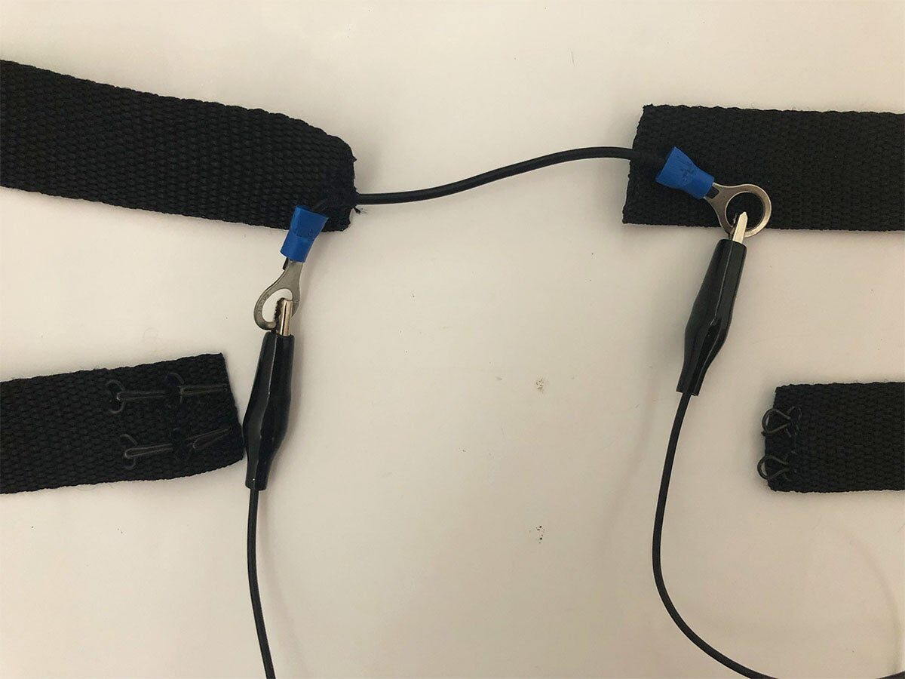

Bodily Awareness Through NIMEs: Deautomatising Music Making Processes
Abstract
The lived body, or soma, is the designation for the phenomenological experience of being a body, rather than simply a corporeal entity. Bodily knowledge, which evolves through bodily awareness, carries the lived body’s reflectivity. In this paper, such considerations are put in the context of previous work at NIME, specifically that revolving around with the vocal tract or the voice, due to its singular relation with embodiment. We understand that focusing on somaesthetics allows for novel ways of engaging with technology as well as highlighting biases that might go unnoticed otherwise. We present an inexpensive application of a respiration sensor that emerges from the aforementioned conceptualisations. Lastly, we reflect on how to better frame the role of bodily awareness in NIME.
Keywords
Somaesthetics, lived body, soma design, framework, design, performance, infrainstruments.
CSS CONCEPTS
•Human-centered computing→Human computer interaction (HCI); •Applied computing→Media arts; Performing arts;
1. Introduction
The notion of bodily knowledge conveys the specificities of sensing and understanding the world through our body’s movement, as a body-subject that can only be lived [1]. It is important to distinguish between the ‘lived’ body and the ‘physical’ body. The first is experienced as a phenomenon to oneself, while the second notion refers to the corporeal entity. Soma is another term to designate the living, sentient body in differentiation from the physical body, and somaesthetics is the critical study and cultivation of how we experience this lived body as a site of sensory appreciation [2]. We find the concept of bodily knowledge to be of theoretical interest for forms of performance or aesthetic experiences dealing with the lived, subjective body. Bodily knowledge, then, aims to describe the living body’s movement ability, the body’s reflectivity that turns back toward what living bodies can do. This learning evolves on the basis of bodily awareness.
Computational and sound technologies stand on Western dualistic paradigms, with its progeny in the military-entertainment complex [3]. This worldview creates separation in dichotomies and hierarchies that function as the base for colonial and patriarchal thinking, prioritizing mind over body, civilisation over nature, instead of holistically understanding those notions as a continuum rather than oppositional. The oppositional approach implies viewing the body either as a tool for the mind or its vessel, and includes the desire of leaving the body itself [4] through technological progress. All in all, the self, the individual, is created as an immaterial aspect—either mind or soul that possesses a body instead of identifying with the sensorial, lived experience.
The lived body is transformed by its encounters with technologies, it is subject to the effects of a rhetoric of technical reason, as much as to its material consequences [5]. We are interested in the ways different technological approaches can aid this profound experiential bodily knowledge, instead of further disassociating from it. Applications of simple technologies can support deautomatisation of perceptual sensibilities [6], through intensifying the participant’s attention directed toward sensory pathways.
By focusing on somaesthetics, we want to highlight biases or ways of engaging with technology that might otherwise go unnoticed or unchallenged. Somaesthetics and the related philosophy of phenomenology [7] have been vastly explored by researchers in cognitive science and HCI. The works of Gallagher and Kirsh emphasised the role that the body plays in cognition [8], and how "interacting with tools changes the way we think and perceive" [9]. Such theories have been supported by neurophysiological studies [10], leading to the rethinking of how we design for interactivity. The very concept of embodied interaction introduced by Dourish in 2001 [11] finds its roots in the philosophy of phenomenology, and inspired the creation of the scientific research fields today known as tangible computing [12], and experiential and pervasive computing [13]. Even to a lower extent, somaesthetics is influencing artistic and technological research in musical instrument design and sonic interaction too. To this end, our first contribution in this paper is a categorisation of previous NIME works through the lens of the literature on phenomenology and bodily awareness. Considering the complexity of such an enterprise along with the breadth of the NIME literature, for the scope of this research we resolved to focus on instruments dealing with the voice, in terms of both means and product. This decision is related to the singularity of voice production as an embodied experience in itself [14]; additionally, the mere existence of voice presumes a lived body, even when it is not the case.
Our analysis is followed by an experimentation of the practical application of the proposed theory. The conceptualisations functioned as a guide and a starting point in its development. The second contribution of this paper is disclosing the personal experience of this process, in an attempt to develop an objective understanding of the behaviors that applications can elicit, by means of autoethnography [15].
2. Categorisation of NIMEs
Our analysis developed from the literature presented in the Introduction, prior to both the specific categorisations and the practical application. It expanded during these last months through the research of what had been done with NIMEs, mostly through past NIME Conference’s papers but also including other endeavours. We were looking almost exclusively at papers and experiences related to the voice or the vocal tract. This scoping process led to the categorisation of said contributions, allowing to frame them according to their own research output and original theoretical standpoints. The motivation for this categorisation lies in revealing how conceptualisations have embedded ideological assumptions and biases, hence privileging certain features and procedures [16]. The proposed categorisations are:
Digital Transcendence of the Body - it deals with cases where the voice is being synthesized through digital means and digitally modeled vocal tracts. It is separated into two subcategories. In the first one, Digitally Modeling of the Body, the vocal tract is recreated through digital means, which makes the voice a non-body possibility. In most examples this means creating a new voice, outside of any body, through modeling or, in other cases, the use of machine learning in order to use a ready-made voice. The second subcategory is Anthropomorphism Through Voice, where specific instruments or software applications like web services are anthropomorphised through the addition of vocal sounds.
Somaesthetic-driven Design - it deals with the body as a material and lived entity. It encompasses three subcategories. The first is Voice as Material, in which the voice is used to create another instrument or work. It is usually used as a trigger, or recorded to be used as primal matter for creating something else. The second subcategory is Performative Aspect of Singing as an Instrument. It is gesture based, usually linked to preconceived notions on how performers act while singing. Some examples of these gestures are wide mouth articulation and full-body motion. In most of these cases, performers or users' cues are captured through an optical tracking/measurement system and used as input to create or control sound. It supposes a distance between the sensor and the person, much like the distance between the audience and the singer. The third subcategory is The Body as an Instrument, where inconspicuous inputs are taken from the body as source material for control or production of sound, from inner articulators to electrical muscular activity. It is also gesture based, but not captured through sensors that rely on close contact with the body.
2.1 Examples of Digital Transcendence of the Body
The 3D printed ‘voice’ instrument based on the vocal tract presented in [17] is a proper example of the first subcategory of Digital Transcendence of the Body , i.e, Digitally Modeling of the Body. The authors make a material instrument based on the vocal tract models, effectively objectifying an occult art of the body to recreate the movements necessary for basic utterances. Another example of this approach is the Gesture Controlled Articulatory Vocal Synthesizer [14]. As the title suggests, it is a synthesized voice made from a digital model of a vocal tract that is controlled through gestures. This particular case uses tongue muscle activations as input to control the tract’s geometry, which is then sonified via a real-time acoustic simulation. Even though there is an embodiment aspect to it, it is not connected necessarily to the action of singing, as the gestures are based on hand movement.
Examples of the second subcategory (Anthropomorphism Through Voice) are Tweet Harp [19] and LiVo [20]. In both contributions, words are given to the instrument, whether lyrics or tweets from Twitter, and it uses the words to modulate the synthesized voice. With LiVo, the user can also modulate the vowels of the voice with the keyboard, while the lyrics settled beforehand are used for dynamics’ construction. It is peculiar to note, as well, that in both of these contributions the voice is tied to the idea of language in some way, specifically written, and hence to the communication role it plays. Some applications use voice to give a human characteristic to an otherwise inanimate object, such as LiVo or MAGE 2.0 [21], the latter being a talking guitar. In the case of Tweet Harp, a synthesized voice is vocalizing tweets made from either humans or bots indifferently, which brings forth the usage of digital technology, specifically social media, as a communication tool between all users, humans or otherwise.
In both subcategories the voice is noted as something that can exist without a human body, as a physical resonance box with the necessary dimensions to create such a sound. This is also related to the first subcategory in the second category, Voice as Material.
2.2 Examples of Somaesthetic-driven Design
The first subcategory of Somaesthetic-driven Design is Voice as Material. In it, we can place Grain Prism [22], where the voice of the user is used as source material for granular synthesis and sampling. Through an interface based on touch and symbols, Grain Prism focuses not on the capability of the voice for communication but rather on the voice as an input for experimentation. Even if the user needs to generate the input, it is still relegated to the control parameters of the external instrument which can diminish the somatic engagement. The ORB, Oral Resonant Ball, from the Vocal Vibrations project [23] provides awareness of the physical processes involved in vocal production by giving feedback about and enhancing the vibrations produced by a person’s body. In this case the voice is still used as input, but in terms of vibrations, which are sent to the object. The authors state that “Fingertips contain more sensory receptors than our vocal vibrating chamber; thus, the same vibrational signal sent into the hands will be felt differently and with more detail than when sent into the body”. This enhances the somatic experience through a closed loop of vibrations.
A prime example of Performative Aspect of Singing as an Instrument is Voicon [24], an interactive gestural microphone. In this case, gestures like body inclination are taken into account by the enhanced microphone, which has a gyroscope and pressure sensors embedded, to effectively modulate the voice, producing a wider arrange of pitch as well as singing techniques such as tremolo. The performance aspect of singing related to entertainment is used as input to homogenise individual voices through hegemonic canons of how it should sound. In this case, the voice is constructed as a commodity, related to the serialization of pop stars, and not as a bodily experience of pleasure or knowledge. Another instance for this subcategory would be a system that allows users to experience singing without singing using gesture-based interaction techniques [25]. In this case, a media installation was developed through 3D rendering systems, face and body tracking and voice synthesis that enable the user to sing an aria. It can be related to the aforementioned Gesture Controlled Articulatory Vocal Synthesizer; however, this contribution focuses more on the performative and visual aspect of singing and its relation to its perceived musical expression according to western Opera canons.
In the last subcategory, Body as an Instrument, Tongue’n’Groove [19] uses an ultrasound scanner for direct control of the voice. It focuses on the tongue and on the musculature of the singing voice, in this way preserving the intimate relationship a vocalist has with their instrument, while expanding its sonic capabilities. Another similar experience has been done through surface electromyography [20]. The interface Body Electric [28] is a corset with pressure sensors designed through a singer’s bodily knowledge and experience of breath. In this case, the performer controls the sensors through her body; by means of Max patches, she can trigger and control pre-recorded tracks of her own voice, as well as process her breath and voice live.
An aspect worth noting in the last examples, as well as in the ORB, is how a closed loop is created between the body and the technology, in order to amplify and denaturalise the role the body plays in creating sounds. This method is effective as a means of creating an embodied correspondence between sound (the voice) and what makes it possible (the body), through deautomatisation aided by technology.
It is important to note that the proposed categorisations can overlap with each other. It is mostly a matter of what is prioritised in the theoretical and practical argumentation proposed by the authors, rather than exclusively of the specifications of the instruments.
3. Experiencing Embodiment Through Voice
In this paper, we wanted to engage with bodily knowledge as a core aspect of conceptual and practical production. Because of this, testing embodiment in first person was a needed aspect from which to contribute, as to understand somatically what different applications and procedures could reveal.
Our initial interest was to use an aspect of the vocal tract's physiology as a controller for the voice1, though conceiving what could be perceived as an unnatural instrumental metaphor—at least during the first steps of its musical exploration. This decision was informed by Parviainen’s [1], Davies' [6] and Shusterman's [2] philosophies and practices; it was taken with the intent to pursue the deautomatisation of the perception of the activity in itself, in favor of an increased self-awareness around the sensory experience and the lived body. In practical terms, this translates in experiencing the act of singing as composed of tensing and relaxing muscles, inhaling, exhaling, salivating, swallowing, etc.
Among the various physiological mechanisms that make voice possible, we decided to focus on breathing (inhaling and exhaling), for two main reasons. The first reason reflects the role that the respiratory act has in the lived body experience. Breathing is a mindfulness practice within many reflective and contemplative traditions [29]. As an involuntary action that can be accessed voluntarily, it holds a privileged space in every person's gamut of physiological capabilities and hence makes place for the aforementioned and sought-after self-awareness. The second reason for choosing breathing for the first-hand exploration of voice embodiment deals with the problem of technological access. A wide variety of high-end sensors are available that can be used to measure several of the physiological mechanisms happening in the vocal tract, in the form of consumer products2, research technologies[20], as well as a combination of the two [19]. This type of consumer biofeedback sensors are readily available in Western regions of the World like North America and Europe; likewise, the tools and the materials necessary to replicate research implementations are accessible and somewhat affordable in those same countries. However, the experimentation phase of this project was carried out autonomously by the first author (A1) in a Latin American country, without the support of external funding. As a consequence, our design decisions had to account for issues like unfavorable local currency value, large import taxes and shipping costs/times, as well as a general scarcity of materials that in other regions are plenty available off the shelf. This is a common scenario in the diverse community of NIME research, that has been recently discussed at great length by Tragtenberg and colleagues [23]. Given the limited personal resources we had at hand, the design of a do-it-yourself respiration sensor seemed the solution that best fit our needs. Both the literature [31] [32] and online communities of practitioners3 propose inexpensive designs, that measure breath with reasonable precision and rely upon accessible hardware and software configurations.
3.1 Sensor and Application Design


A close-up of the belt respiration sensor, where the conductive rubber cord is hooked up to the fabric band. The crocodile clips connect the terminals of the sensor to the Arduino.
The final design consists of a simple belt respiration sensor. It is composed of a 10 cm conductive rubber cord hooked up to an inextensible fabric band, long enough to be wrapped around the abdomen (Image 1). When the belt is worn tightly in the vicinity of the diaphragm, respiration causes the rubber cord to cyclically stretch and release. This change in size determines a variation in the electrical resistance of the cord that can be sensed via a voltage divider circuit connected to the analog input of an Arduino. The conductive rubber cord was purchased from Adafruit4 and came in a kit with two crocodile clips and a resistor; cost and shipping time amounted to 10 US dollars and around a month, respectively. The band was recycled from old apparel and the Arduino belonged to A1 already. The final device works like a digital bellows, for the raw data from the sensor is processed via an Arduino sketch that extracts the rate of change of the input. We then designed two custom sound applications meant to be controlled via the device, via serial communication. Both applications were programmed with free/open-source software.
The first application consists of a modified version of the web application called ‘Pink Trombone’, created by Neil Thapen in 20175. In its original version, the Pink Trombone provides a single graphical interface to both excite and control a simulated vocal tract. Our design decouples these control modalities, by mapping the respiration data coming from the Arduino to the excitation part and devolving the graphical interface to controlling the shape of the vocal tract only. Therefore, when exhaling, the virtual voice is triggered and the sound follows the acceleration of the breath. This application was purposefully conceived as a hybrid between the two main categories of the proposed framework (i.e., Digital Transcendence of the Body and Somaesthetic-driven design ), in that it uses the deflation of the lower abdomen—an intrinsically somatic mechanism of voice production—to control the digital voice that is synthesized on the webpage.
The second arrangement of the sensor and Arduino setup was used with a SuperCollider application coded from scratch. In this case, the rate of change of both inhalation and exhalation controls the frequency and the delay parameters of a pitch alteration effect, applied to real-time voice input. This causes an ongoing distortion that becomes more noticeable with conspicuous and rapid movements of the lower abdomen. With this design, we decided to engage with the closed loop between technology and the body discussed in Section 2.2. As a result, the application belongs to the Somaesthetic-driven design category and more distinctively to The Body as an Instrument.
4. Discussion
The musical exploration conducted by A1 revealed both differences and similarities between the two applications. Yet, in most cases the elicited behaviours are ascribable to applications of somaesthetic theory and proved akin or complementary to what discussed in the related literature.
As introduced in Section 3.1, in the first application the exhalation rate excites the digital voice created by the Pink Trombone. This guided A1 into taking deeper breaths, by inflating her lower abdomen instead of relying on shallower chest motion. The elastic sensor, the graphical feedback on the web application, as well as the direct relationship between respiration and output sound all worked together to emphasise the embodied experience of the voice—even if it was not a human one. The acoustic simulation carried out by the vocal model was not enough to identify the sound output as 'real' human voice, let alone as A1's own voice. Nonetheless, the somaesthetic aspect of the chosen mapping design allowed for a relocation of the digital voice within the lived body, in a way that is hard to achieve with more traditional mapping strategies and in spite of how advanced the synthesis technology may be [14]. This leads us to think that a similar somatic involvement may be in reach even when the output is less human and more 'alien', the most obvious case being generic sound synthesis. Though sounding much like a predicament, something similar has been contemplated by Davies in the domain virtual reality too; works like Osmose[33] leverage the same mechanisms to offer an embodied experience of spaces that "are not based on physical reality nor on our ingrained habitual responses to physical reality" and that, according to Bachelard, "can become physically innovating" [34].
The second application uses respiration to modify frequency and temporal domain features of the input vocal signal. In this case, both inflation and deflation are accepted as control inputs, characterising the system with very unstable sonic equilibrium points. To respond to such a sensitivity and generate the desired modulations, A1 resolved in exploring continuous gestures and changes in velocity. These translate in forms resembling staccatos, performed by forcing the stomach to contract in each note and relax quickly; or spiral sounding glissandos, where the abdomen contracts more gradually. Similarly to what experienced with the first application, this mapping also encouraged a deep breath situated in the lower abdomen instead of a superficial breath that inflates the chest. But since this application is conceived for voicing or singing with one's own vocal tract, more compromises have to be made between the abdomen movement and the sung voice. These adjustments between what looked and felt like choreography and the actual voice conveyed a strong sense of deautomatisation of the gestures. A1 needed to focus explicitly on her breathing and the movements it elicits, rather than on vocal production only. The result is an overlapping of physiological mechanisms and modalities that, similarly to what discussed by Avila and colleagues [28], shifts the attention on the nuances of playing a body-centred musical instrument.
The combined outcome of these different yet congruent experiences offers the opportunity to generalise our discussion. In the next subsections, we share three reflections that we believe have the potential to better frame the role of bodily awareness in music performance and instrument design at large, beyond the boundaries of voice and respiration.
4.1 Choice of Sensor
The choice of sensors affects the performer’s experience as well as the aesthetic-poetic conceptualisation of the artifact. The first arrangement of the sensor promoted A1’s body awareness, as it connects sound generation to a specific area of their body close to the diaphragm and to breathing deeply. By focusing on this particular somatic experience instead of on the sonic outcome, the fundamental action of breathing is used as a generative force in spite of its involuntary nature.
Digital musical instruments design usually focuses on technical and sonic factors, giving less attention to the bodily experience of the performer [28]. It is not an equivalent experience engaging with a sensor that accompanies one’s movements than with a sensor that tracks them from a distance. The tangible correspondence between the body and the sensor emphasises the importance of the somatic experience of the lived body. In our case, this happened through the tight and elastic embrace of the sensor around A1’ chest. Other sensors, like cameras or other visual tracking devices, due to their distance and design, focus on the body as an object to be recorded, processed and surveilled from afar. The relationship between human and sensor differs greatly depending on the closeness, contact and interference of the sensor onto the human activity. Therefore, the relocation of the focus towards the ‘process’, the ‘experience’ and the musician’s relationship with the sensor can allow novel practices or conceptual frameworks to arise.
4.2 What Are We Replicating?
It is important to be aware of the ideological frameworks of technology in order to understand what one is replicating. Through the process of the categorization of papers and practical applications detailed in Section 2, it became increasingly apparent the importance of situating, historically and socially, how and why we use technology. Is it for homogenizing certain human traits? To distance ourselves from our actual bodily capabilities when we are not virtuous technically? A conceptual shift can modify the way one interacts with technology; and consequently, the way one develops it and re-examines the possibilities of agency. Both Techno-Vernacular Creativity (TVC) [23]and infrainstruments [36] opt out of canonised methodologies, processes and results when dealing with the processe of making music. In TVC, this opting out is related to not complying with imposed colonial paradigms, due to either material impossibility or ideological objection—ideals that we embraced during our design endeavours too. This reshapes the way we engage with technology and actively challenges the constructed meanings of the dominant one. This last aspect is also true for infrainstruments, as the notion centers around simplicity of sensors and restriction in virtuosity and interactivity. We consider our exploration as part of this paradigm too. We did not seek to enhance the voice in itself, but rather to deepen the somatic experience of the voice through simple technology, simple controls and the simple ‘gesture’ of breathing.
4.3 Deautomatisation as a Technique For Reflectivity
An application that is counterintuitive can foster reflectivity on the experience, which can later be extrapolated to other ones. As mentioned in Section 4, deautomatisation was used as a technique to foster A1’s body awareness. This approach is related to the notion of estrangement, as a useful strategy for enabling the tacit and intimate reflection on something mundane [37]. This is based on prolonging the time between perception and understanding for re-learning or gaining deeper understanding. However, deautomatisation also conveys the way our relationship with technological and artistic experiences has been automated by design. What we often refer to as intuitive design in HCI is design that we have grown accustomed to. It relies on a standard of human perceptual specificities to function accordingly, often privileging some over others.
During the exercising of the application, A1 needed to be receptive to the changes in her body and sensor and to how her voice was affected by those movements, instead of replicating standardised gestures of performance. This appreciation of the feedback between the performer and the sensor is related to the notion of the technological body, which can be understood as the current state of the relation between technology and the body—physical or lived [38]. Deautomatising this relation can affect not only the performer-instrument relationship, but the understanding of the feedback in the human-technology relationship.
5. Conclusion
In this paper, we engage with literature surrounding the notion of bodily knowledge, from which we derived a categorisation of past NIME’s works and an application design focused on the vocal tract and the voice. Such a theoretical and practical exploration of music technologies aimed at highlighting the importance and the potential of soma design in NIME, as well as the possibility of creating relevant experiences without expensive or complex technology. We believe both of these aspects can contribute greatly to the rethinking and developing of future NIMEs.
6. Acknowledgments
We would like to thank the NIME Mentorship Program, as we would not have been able to focus on this research and experimentation if it was not for it.
7. Ethics Statement
During the process of this research, it was a priority for us to engage with technology that was inexpensive and simple. This decision was in part due to the lack of funding and the impossibility of accessing specific hardware from Latin America, but also because we believe complex and expensive technology is not a requirement for relevant technological and philosophical applications. We have programmed using only free/open-source software. We used an autoethnography methodology when dealing with practical endeavors. As a result, we can ensure inclusivity as one of the authors is a BIPOC woman, as well as the capacity of self-determination in all tests and consent in terms of data and privacy.
The practical applications of this paper have been designed with accessibility in mind, as they do not require a vast knowledge of programming or music.
The consumption of technology was limited to the conductive cord sensor and terminals, as we worked with what was mostly at hand. We also believe our research theoretical framework is aligned with the rethinking of technological progress and applications in regards to the current environmental crisis.
Footnotes
Again, here we embrace a broad definition of voice, comprising both processing and synthesis.
↩- ↩
e.g., https://www.instructables.com/Quick-and-dirty-Respiration-Sensor/
↩- ↩
- ↩
Citations
- ↩Parviainen, J. (2002). Bodily knowledge: Epistemological reflections on dance. Dance Research Journal, 34(1), 11–26.
- ↩Shusterman, R. (2008). Body consciousness: A philosophy of mindfulness and somaesthetics. Cambridge University Press.
- ↩Goodman, S. (2012). Sonic warfare: Sound, affect, and the ecology of fear. Technologies of Lived Abstraction.
- ↩Davies, C. (2003). Rethinking VR: Key concepts and concerns. Hybrid Reality: Art, Technology and Human Factor. International Society on Virtual Systems and Multimedia, Montreal, Canada, 253–262.
- ↩Conley, V. A., & others. (1993). Rethinking technologies. U of Minnesota Press.
- ↩Davies, C. (1998). Changing space: Virtual reality as an arena of embodied being. The Virtual Dimension: Architecture, Representation, and Crash Culture, 144–155.
- ↩Griffero, T. (2021). Corporeal Landscapes: Can Somaesthetics and New Phenomenology Come Together? The Journal of Somaesthetics, 7(1).
- ↩Gallagher, S. (2006). How the body shapes the mind. Clarendon Press.
- ↩Kirsh, D. (2013). Embodied cognition and the magical future of interaction design. ACM Transactions on Computer-Human Interaction (TOCHI), 20(1), 1–30.
- ↩Làdavas, E. (2002). Functional and dynamic properties of visual peripersonal space. Trends in Cognitive Sciences, 6(1), 17–22.
- ↩Dourish, P. (2001). Where the action is: The foundation of embodied interaction (Paperback 2004 ed.). Cambridge, MA: MIT Press.
- ↩Hornecker, E., & Buur, J. (2006). Getting a grip on tangible interaction: a framework on physical space and social interaction. Proceedings of the SIGCHI Conference on Human Factors in Computing Systems, 437–446.
- ↩Yoo, Y. (2010). Computing in everyday life: A call for research on experiential computing. MIS Quarterly, 213–231.
- ↩LaBelle, B. (2014). Lexicon of the mouth: Poetics and politics of voice and the oral imaginary. A&C Black.
- ↩Cunningham, S. J., & Jones, M. (2005). Autoethnography: a tool for practice and education. Proceedings of the 6th ACM SIGCHI New Zealand Chapter’s International Conference on Computer-Human Interaction: Making CHI Natural, 1–8.
- ↩Núñez-Pacheco, C. (2015). Expanding our perceptual world through technology: a subjective bodily perspective. Adjunct Proceedings of the 2015 ACM International Joint Conference on Pervasive and Ubiquitous Computing and Proceedings of the 2015 ACM International Symposium on Wearable Computers, 951–956.
- ↩Yoshimura, F., & Jo, K. (2019). A" voice" instrument based on vocal tract models by using soft material for a 3D printer and an electrolarynx. NIME, 411–412.
- ↩Wang, J., D’Alessandro, N., Fels, S. S., & Pritchard, R. (2012). Investigation of Gesture Controlled Articulatory Vocal Synthesizer using a Bio-Mechanical Mapping Layer. NIME.
- ↩Endo, A., Moriyama, T., & Kuhara, Y. (2012). Tweet Harp: Laser Harp Generating Voice and Text of Real-time Tweets in Twitter. NIME.
- ↩Yamamoto, K., & Igarashi, T. (2016). Livo: Sing a song with a vowel keyboard. Journal of Information Processing, 24(3), 460–468.
- ↩Astrinaki, M., D’Alessandro, N., Reboursière, L., Moinet, A., & Dutoit, T. (2013). MAGE 2.0: New Features and its Application in the Development of a Talking Guitar. NIME, 547–550.
- ↩Advincula, G. B., Haddad, D. D., & Larson, K. (2019). Grain Prism: Hieroglyphic Interface for Granular Sampling. NIME, 284–285.
- ↩Holbrow, C., Jessop, E., & Kleinberger, R. (2014). Vocal vibrations. Proceedings of NIME, 431–434.
- ↩Park, Y., Heo, H., & Lee, K. (2012). Voicon: An Interactive Gestural Microphone For Vocal Performance. NIME.
- ↩Poepel, C., Feitsch, J., Strobel, M., & Geiger, C. (2014). Design and Evaluation of a Gesture Controlled Singing Voice Installation. NIME, 359–362.
- ↩Vogt, F., McCaig, G., Ali, M. A., & Fels, S. S. (2002). Tongue’n’Groove: An Ultrasound based Music Controller. NIME, 60–64.
- ↩Reed, C., McPherson, A., & others. (2020). Surface Electromyography for Direct Vocal Control.
- ↩Cotton, K., Sanches, P., Tsaknaki, V., & Karpashevich, P. (2021). The Body Electric: A NIME designed through and with the somatic experience of singing. International Conference on New Interfaces for Musical Expression.
- ↩Parviainen, J. (2002). Bodily knowledge: Epistemological reflections on dance. Dance Research Journal, 34(1), 11–26.
- ↩Davies, C. (1998). Changing space: Virtual reality as an arena of embodied being. The Virtual Dimension: Architecture, Representation, and Crash Culture, 144–155.
- ↩Shusterman, R. (2008). Body consciousness: A philosophy of mindfulness and somaesthetics. Cambridge University Press.
- ↩Prpa, M., Stepanova, E. R., Schiphorst, T., Riecke, B. E., & Pasquier, P. (2020). Inhaling and Exhaling: How Technologies Can Perceptually Extend our Breath Awareness. Proceedings of the 2020 CHI Conference on Human Factors in Computing Systems, 1–15.
- ↩Reed, C., McPherson, A., & others. (2020). Surface Electromyography for Direct Vocal Control.
- ↩Vogt, F., McCaig, G., Ali, M. A., & Fels, S. S. (2002). Tongue’n’Groove: An Ultrasound based Music Controller. NIME, 60–64.
- ↩Tragtenberg, J., Albuquerque, G., & Calegario, F. (2021). Gambiarra and Techno-Vernacular Creativity in NIME Research. International Conference on New Interfaces for Musical Expression.
- ↩Bhaskar, A., Subramani, S., & Ojha, R. (2013). Respiratory belt transducer constructed using a singing greeting card beeper. Advances in Physiology Education, 37(1), 117–118.
- ↩Chu, M., Nguyen, T., Pandey, V., Zhou, Y., Pham, H. N., Bar-Yoseph, R., Radom-Aizik, S., Jain, R., Cooper, D. M., & Khine, M. (2019). Respiration rate and volume measurements using wearable strain sensors. NPJ Digital Medicine, 2(1), 1–9.
- ↩Wang, J., D’Alessandro, N., Fels, S. S., & Pritchard, R. (2012). Investigation of Gesture Controlled Articulatory Vocal Synthesizer using a Bio-Mechanical Mapping Layer. NIME.
- ↩Davies, C., & Harrison, J. (1996). Osmose: towards broadening the aesthetics of virtual reality. ACM SIGGRAPH Computer Graphics, 30(4), 25–28.
- ↩Bachelard, G. (2014). The poetics of space. Penguin Classics.
- ↩Avila, J. M., Tsaknaki, V., Karpashevich, P., Windlin, C., Valenti, N., Höök, K., McPherson, A., & Benford, S. (2020). Soma Design for NIME. Proceedings of the 2020 International Conference on New Interfaces for Musical Expression (NIME’20).
- ↩Avila, J. M., Tsaknaki, V., Karpashevich, P., Windlin, C., Valenti, N., Höök, K., McPherson, A., & Benford, S. (2020). Soma Design for NIME. Proceedings of the 2020 International Conference on New Interfaces for Musical Expression (NIME’20).
- ↩Tragtenberg, J., Albuquerque, G., & Calegario, F. (2021). Gambiarra and Techno-Vernacular Creativity in NIME Research. International Conference on New Interfaces for Musical Expression.
- ↩Bowers, J., & Archer, P. (2005). Not hyper, not meta, not cyber but infra-instruments. Proceedings of the 2005 Conference on New Interfaces for Musical Expression, 5–10.
- ↩Wilde, D., Vallg\aarda, A., & Tomico, O. (2017). Embodied design ideation methods: analysing the power of estrangement. Proceedings of the 2017 CHI Conference on Human Factors in Computing Systems, 5158–5170.
- ↩Bomba, M. S., & Dahlstedt, P. (2019). Somacoustics: Interactive Body-as-Instrument. NIME, 95–100.